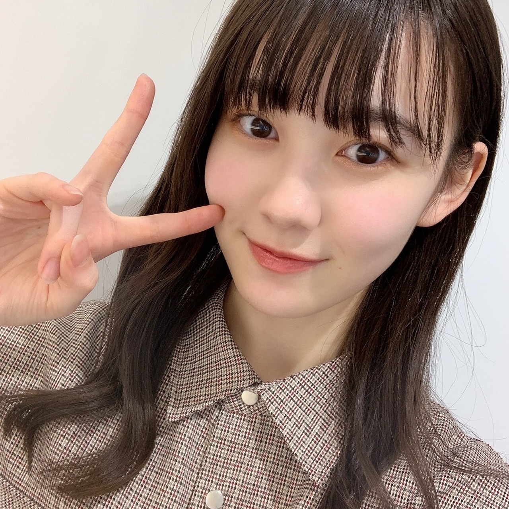

2020/1206Sun4！！ 松尾美佑
高校2年生
16歳
松尾美佑です¨̮
今日はなんの日ですか？
そうです！
今日は4期生ライブの日です！！！
わーーーい！！
ついに来ちゃいましたよ今日が！！
楽しみな気持ちと緊張と！
もう心臓から目が飛び出ちゃいそうな勢いです！

さて！
話は一旦過去に戻りまして
のぎおび4期生ウィーク、楽しんでもらえましたでしょうか！
まゆみゆは、なんとのぎおび選手権でビリになっちゃったので罰ゲーム #のぎばつ をしました
( ᵕ ᵕ̩̩ )
一昨日のかっきー、せーらちゃん、まゆちゃんの のぎおびに罰ゲームのみ参加させて貰いました(、._. )、
プロポリス
本っ当に美味しくなかった！！
です
でも喉には良いらしいので
皆さんも是非(^^)
尼崎姉妹さんな2人をあんな至近距離で拝めて嬉しかったです

物凄い小さな誰も気づかない情報を置いておきます。
髪の毛を3cm切りました
( ˙ỏ˙ ) ほへーですね
そして！
1月の生誕記念グッズが発表されました〜
うさこあらと共に空にパワーを送りました〜
良かったらチェックしてみて下さいˊᵕˋ
そして！その2
レコメン！乃木坂四期生メガ盛り祭り
という事で12月7日から2週間に渡って4期生がレコメン！に登場させて頂きます！
ちなみに私は
12月9日に
大好きな柚菜ちゃんとレイちゃんと3人で登場します！
是非聴いて頂けたら嬉しいです！
明日は〜
なお〜〜〜〜〜〜〜〜〜
今日のアドベントカレンダーのチョコはホワイトチョコだった！
さぁ！
もう！もう、今日ですよ！？
いよいよですね(*¨*)
気が早すぎるのですが、
数時間後には始まって、そして終わっちゃう事に既に凄く寂しさを感じたりしちゃっていて、
一緒に楽しんで絶対に忘れられない時間にしましょう！

それでは！
またあとで会いましょね〜( Ꙭ )/''
ミュウでした¨̮

あとでねっっっっっ( Ꙭ )/''( Ꙭ )/''( Ꙭ )/''
コメント(227)
報告するの忘れてたんだけど、乃木フェスのイベントで美佑ちゃんのレーンで5位になったから46時間TVの時のタオルにサインが書いてあるのとチェキが貰えるの☺︎
サイン書くの多くて大変だったと思うけど書いてくれてありがとう！大切にするね！
1月中に届くと思うからミーグリでも報告するね
それから、乃木恋のイベントの結果が明日わかるんだけど、もし抽選で当たったら美佑ちゃんに名前書いてもらえるから今からドキドキしてる！当たりますように~
結果分かったら報告するね
今日はやや遅コメです。
4期生ライブから２日が経過した今の心境はどうですか？
心臓から目は飛び出していませんか？
きっと季節外れのセミの抜け殻のように、放心状態になっているのではないですか？
それと、のぎおび選手権の罰ゲームで飲んだ“プロポリス”、喉に良いとの話だけど、その効果はありましたか？
ライブでの生歌のために、まゆみゆコンビはあえてビリになって、プロポリスを飲んだんですよね！
黒見ちゃんがブログに書いてたけど、4期生ライブを経験した今、もうそろそろ新4期生の“新”は取ってもいい時期に来たのかなと思います。
でもそうなると、この新4期生リレーブログも終わっちゃうかもなので、もう少し“新”を付けててほしいような気もします。
なかなか難しい問題ですね！
明日はレコメンですね！
レコメンはいつも聴いているので、めっちゃ楽しみです。
初めてのレコメンで緊張すると思うけど、遠慮せずどんどんお話ししてほしいです。
ノリさんが上手に料理してくれるからね！
むちゃ振りもあるので気を抜かないように頑張って！
生誕Tシャツ、買ったよー！
空にパワーを送るミュウちゃんとうさこあらさん、“晴れ女”パワーで雲と雨を操っているように見えます。
背景はミュウちゃんのサイリウムカラーである「白」と「ターコイズ」ですね！
それではまたコメントするね。
ミュウちゃんにとって明日がいい日になりますように！ (^.^)/~~~
オッハーーー！
今朝はめちゃ寒々だよー
天気は良さそうだよー
ミュウちゃん、今日、レコメンだね！
柚菜ちゃん、レイちゃんと３人
楽しみだよー
テンション上げて頑張るぞーー！！
ミュウちゃんお疲れ様です！
4期生ライブお疲れ様でした！
僕は残念ながら観られなかったですが…
4期生16人での初のライブはどうでしたか？
緊張ももちろんしたと思いますが、楽しめたのならなによりですヨ(^^)
ライブ前最後ののぎおび4期生ウィーク、のぎばつの"プロポリス液"の効果はどうでした？
プロポリスに限らず、よくテレビとかである罰ゲームは受けてみたいとは思いますネ！
今回のライブは、4期生が乃木坂46の未来そのものなんだという証明にもなったんじゃないかと思います！
加入当時何者でもなかった4期生11人が初めて見たステージは、期待や希望を抱きながらも、眩しすぎる光に先の見えない恐怖や不安も抱えていたと思う。
でも今や選抜に入ったり、テレビやラジオ、舞台と一人でも活躍する場が増え、そして遠回りしながらもそこでしか見られない景色をたくさんみてきた新たな光を放つ5人が合流した。
この4期生ライブは未来への創造です！
先輩達が残した、あのときのあの言葉が自分の弱さを吹き飛ばして、受け取った確かなもの。
魂を受け継ぎ、繋げていくということ。
継承と創造。
この両方があったライブになったと思います！
今回は無観客での配信ライブでしたが、これから先の有観客でのライブはさらなる期待が高まるでしょうネ！
改めてお疲れ様でした(^^)
いつも応援してます！
乃木恋の抽選当たりました〜！嬉しい
100人分も書くの大変だろうし少し申し訳ない気持ちもあるけど宛名書いてもらえるの楽しみにしてるね
スリフォかわいかったです！未央奈の衣装もサンタさんも似合ってた！
インフルの裏センターよかったよ！
もう全部よかった。
のぎおび、レコメンと4期生がたくさん活躍してて毎日が楽しいです！
今日は超遅コメです。
レコメン出演、おめでとう！
生放送が聴けないので、You Tubeでアップされるのを待って、今それを聴いて、出来立てホヤホヤのコメしてます。
「レコメン乃木坂4期生メガ盛り祭り」
柚菜ちゃん、レイちゃん、ミュウちゃん３人の放送は、仲の良さがすごく出てて、めっちゃ楽しくて最高の回だったです！
ミュウちゃん、たくさん話してくれましたね！
お昼にお鍋をたくさん食べたこと
グループトークでの真祐ちゃんからの伝言
柚菜ちゃんが好き過ぎることを公開告白
レイちゃんは9割8割年下に感じてること
ツリーのレイちゃんが羨ましかったこと
「側転」ではなく「ロンダート」へのこだわり
身体を動かすことに恐怖心がないこと
合言葉は「床は友達です！」
人見知りでキノコのように土に埋まってたこと
進化した筆箱を持ってるタイプの子だったこと
などなど、たくさんミュウちゃんの話が聴けて、めっちゃ嬉しかったです！
ノリさんとも仲良くなれましたね！
ノリさんとミュウちゃんの２人には「末っ子」「人見知り」の共通点がありましたね！
それに、ノリさんはミュウちゃんのこと「おまつさん」って、あだ名で呼んでくれてましたね！
仲良くなったノリさんとの、この次のレコメンが楽しみです！
時間も時間なので、バタバタとコメント書いてしまいましたが、すごく楽しくて、すごく短く感じた最高のレコメンだったです。
ありがとうです！
それではまたコメントするね。
ミュウちゃんにとって明日がいい日になりますように！ (^.^)/~~~
ミュウちゃんほんとに可愛すぎて、好きが止まりません…
もし良かったら、ライブのアフター配信で着ていたパジャマで自撮り載せてほしいです！
プレゼントは、ご用意なさいましたか？
まさか窓に貼紙して、サンタさんからもらおうと考えてませんよね
みゆスマイル、うさこあらさん、4期生さん、こんにちは+❥:;;;:+❥:;;;:+❥
慌ただしいなか 小さく気づきにくい情報ネタから、ブログ更新を
皆さまからは、忘れられない贈り物⋈♡*｡ﾟをありがとうございました
1月の生誕記念グッズに、はいポチり
フラッグを掲げていらっしゃる うさこあらさん、周りのお友達のこと教えて?
「乃木坂46 4期生ライブ2020」無事に成功、お疲れさま
影ナレ、表題曲、ユニット曲にも、ミュウの声が聞けたこと
ポニーテールの髪型は可愛らしく、目で追いやすかった
楽曲の途中での、大技パフォーマンス披露には仰天
4期生の新曲MVが楽しみに等・・、感想をあげたらきりがないくらいです
MCコーナーでは2度も涙を溢してしまい、(৹˃ᗝ˂৹)恥ずかしい
みゆりん視点の現地リポ＆オフショット、お待ち申し上げております✌
「レコメン乃木坂四期生メガ盛り祭り！」水曜はスマイルガールズ登場
朝が早いためにリアルタイムの拝聴できず、ごめんなさい
のちほど、チェックさせていただきますね♫
「箱根駅伝2021完全ガイド」＜対談＞佐藤楓さん＆向井葉月さん
箱根駅伝の1～10区のオーダーを乃木坂メンバーで組んでみる企画では、スターターの１区"松尾美佑 選手"の名前、「おっ！」となりました♪
それでは
今週は、綺麗なオデコを見せてくださった２枚目の写真が特に好きです
明日（12/11）笑顔でお会いしましょう、遠くても愛してるーッ♡
オッハーーー！
今朝はこの冬一番の寒々だよー
指先が冷たくて痛いよー
レコメン、どうだった？
まだ聴いてないけど
あとで聴くの楽しみー！
テンション上げて頑張るぞーー！！
本日は4期生ライブの感想Part2！特に印象深かったところを…
"Three fold choice"はレイちゃんと黒見ちゃんと、美佑ちゃんの3人ユニットだったね！のぎおびでユニット発表した時から楽しみで楽しみで仕方なかったんだけど3人とも可愛くて衣装も似合ってました！あと、背景に映ってた美佑サンタにも目がいっちゃいました(笑)3人でカメラの前奪い合うの微笑ましすぎて、また見たいなぁって思いました！
ユニット終わったあとは4期生楽曲だったね！
TIFのときにキスの手裏剣とI see…は16人で披露してたけど4番目の光と図書室の君へは16人初披露だったね！どれも凄く感慨深かったです。特に4番目の光、4期生の数字が入った象徴する楽曲だと思うんだけど16人で披露してるのを見て凄く感動しました。まだ4期生11人と新4期生5人って分ける人はいるかもしれないけど俺は新とか関係なくよ乃木坂46の4期生は16人だと思ってるし、これからも16人の4期生を好きでいれる自信しかないです(笑)
そして4期生の新曲"Out of the blue"の初披露。曲名だけ聞いた時はかっこいい感じなのかな？って思ったけどめちゃめちゃキャッチーで振り付けも可愛くてMVも早く見たいなぁって思いました！
どこまで言っていいのか分からないけど、パジャマパーティーも16人の絡みが見れたしそれぞれのパジャマも似合ってて本当に癒される時間でした。そういえばもともとさぁちゃんの着てた緑のパジャマ着る予定だったって言ってたよね？さぁちゃんも美佑ちゃんの着てた赤のチェックのパジャマ着たいって言ってたけど流石にあのあと交換したりとかはしてないのかな？(笑)でも2人の色でクリスマスだねぇとか話してて仲良しかよってとても微笑ましかったです！美佑ちゃんとさぁちゃんの2ショットとかあったら見てみたいなぁって思いました！
いやぁ、本当にこのコメント書いてて思ったけどやっぱ4期生好きすぎるんだよね。見逃してる部分がないようにめっちゃ真剣に見たけどいつか円盤化とかして欲しいなぁって思ったり、円盤化無理なら乃木動画で公開して欲しいなぁって思いました。また見たいもん(笑)またいつか16人で4期生ライブ、今度は有観客でやれたらいいね。その時は絶対に行きます！
てことで、今回はコメントこの辺で…明日はブログ更新日だね！だいちゃりは安定の仕事だけど楽しみにしてるね？またコメントしマース！
それじゃ、ばいっ！！
今日は朝コメです。
4期生ライブから5日が経ちましたが、まだどっぷり余韻にひたっています。
それぞれの色でキラキラ輝いてくれた16人、そして最高のミュウスマイル、ありがとうです。
『12月6日』はメンバーにとってもファンにとっても特別な日になりましたね！
そして、レコメン乃木坂4期生メガ盛り祭り、こっちは何回もリピートして聴いてます。
聴く度に、３人の仲の良さ、三角な関係性、ノリさんとのやりとりなど、面白くて、新たな発見もあって、あっと言う間の30分、本当に“神回”な放送をありがとうです。
ここで質問、
○今日のアドベントカレンダーのチョコは何だったの？
○リレーブログ、今回で何回目？
（ヒント:皆んなにとって特別な数ですよ！）
瑠奈ちゃんのブログより
“緊張してませんから！！”って強がってたら、みゆちゃんにぎゅってしてもらいました。
涙が出るくらいいい話をありがとうです。
今日は「1」の付く日でミュウちゃんのブログの日！
楽しみに待ってます！
それではまたコメントするね。
ミュウちゃんにとって今日がいい日になりますように！ (^.^)/~~~
オッハーーー！
今朝も寒々だけど
気持ち良く起きれたよー
だって今日は１週間のラストデー
それにミュウちゃんのブログもあるよー
テンション上げて頑張るぞーー！！
今日はみゆちゃんのブログだね！楽しみにしてるね。
今日はまだ書いてなかった４期生ライブの感想を書くね。
本当に最高だったよ！
何よりもやっぱり４期生の仲の良さがすごく感じられて。
それから、セトリもすごく良かった。
好きな曲がたくさんだった。bicycleもありがちも大好きなんだよね。命もやっぱり冬には聞きたいもんね。
みゆちゃんが映るたびに「可愛すぎだろ」って言ってニヤニヤしてたよ。
threefold choice、本当に最高だったよ。
ユニット曲の中で一番みゆちゃんに合ってる曲なのかも、と思った。みゆちゃんのかわいさとスタイルの良さが出ててすごく良かった。それと、思いがけずみゆサンタが見られて最高だった〜！
アフターライブのパジャマもすごく似合ってたね。
何でも似合いそうだけど、肌が白いから赤とか特に似合うのかも！それとあらロマの時に気づいたんだけど、みゆちゃんは背が高くて手までスラッとしてるから、一番端にいても映えるな、って。上を指差して戻すフリがあるでしょ、その時にみゆちゃんだから綺麗に見えるんだな、って思ったよ。
それと、乃木恋の彼氏イベントで７位になったからまたみゆちゃんの書いたものがもらえるみたいで楽しみだな。
クリスマスカードをもらう動画も見たよ〜！
また可愛すぎてニヤニヤしちゃった。
それと、生誕Ｔシャツとタオルも買ったよ〜。
届くのが楽しみだな。
それじゃ、今日も１日がんばろうね！
今日も〜、みゆスマイル！
あーーーー、ブログにコメントするの忘れてたーーーー
ライブ見ました！！！！！
美佑スマイル届きましたよ！
次のブログのコメントでライブの感想書きます！
今日のブログ楽しみに待ってます！
たつやでした٩( ᐛ )و
ではではー
質問
・生誕Tシャツのデザインは天気の子を意識したデザインですか？
あーーーー、ブログにコメントするの忘れてたーーーー
ライブ見ました！！！！！
美佑スマイル届きましたよ！
次のブログのコメントでライブの感想書きます！
今日のブログ楽しみに待ってます！
たつやでした٩( ᐛ )و
ではではー
質問
・生誕Tシャツのデザインは天気の子を意識したデザインですか？
マジで応援してます。大学受験生上がったら握手会行きたいです、いや行きます！！
美佑ちゃんが受験を乗り越えるパワーの源です。ありがとう！！
お互いがんばりましょう
トキトキメキメキもすごく良かったよ！
チアの振り付けもすごくかわいかったし、みゆちゃんのロンダートからのバク転の披露があったしね！
もちろん乃木中でも見たけど、ライブで披露できるチャンスがあって嬉しいね！
threefold choiceが良すぎて、朝の感想に書くのを忘れちゃったけど。
今日もみゆちゃんのミーグリのチケット当たったよ〜！
ブログも楽しみにしてるね！
ミュウちゃんブログ更新ありがとう！
最近メディアでミュウちゃん見る機会増えたから嬉しいよー
相変わらず可愛い！
これからも応援してます！
ʕ•̫͡•ʕ•̫͡•ʔ•̫͡•ʔ•̫͡•ʕ•̫͡•ʔ•̫͡•ʕ•̫͡•ʕ•̫͡•ʔ•̫͡•ʔ•̫͡•ʕ•̫͡•ʔ•̫͡•ʔ
ライブお疲れ様でしたー
いやいや配信ライブとは思えないほどの熱気を感じられてめっちゃ楽しかったです！4期最高です
『Threefold choice』衣装もめっちゃ似合ってたし、よかったよー
あ、ミーグリ取れたので来年はどうぞよろしくお願いします。楽しみにしております！
ではまた
ばいばーい
コメントする

PROFILE
新4期生リレー
202104
| SUN | MON | TUE | WED | THU | FRI | SAT |
|---|---|---|---|---|---|---|
| 1 | 2 | 3 | ||||
| 4 | 5 | 6 | 7 | 8 | 9 | 10 |
| 11 | 12 | 13 | 14 | 15 | 16 | 17 |
| 18 | 19 | 20 | 21 | 22 | 23 | 24 |
| 25 | 26 | 27 | 28 | 29 | 30 | |

4期生ライブお疲れ様でした
最高のライブでした
ありがとう
また改めてコメント書かせてもらうね
罰ゲームお疲れ様
プロポリスちょっと飲んでみたくなった
でも飲まないだろうな笑
髪の毛切ったのも、もちろん気付いてたよ
でも3cmかぁ2.5cmくらいかと思った笑
生誕記念グッズもちろん買いまーす
届くの楽しみ
ではまたね
ばいばい